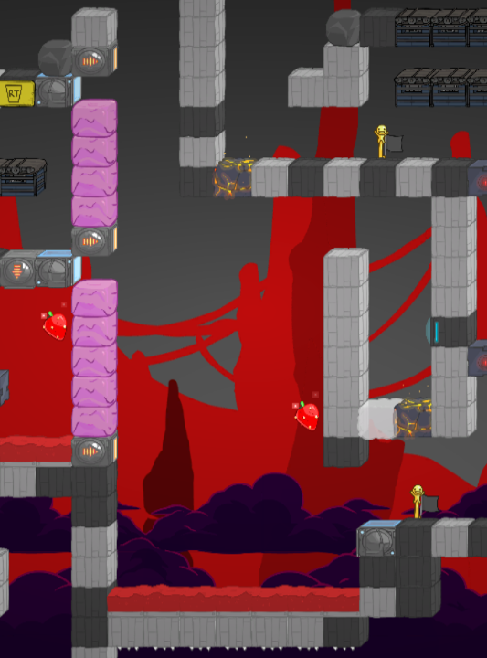
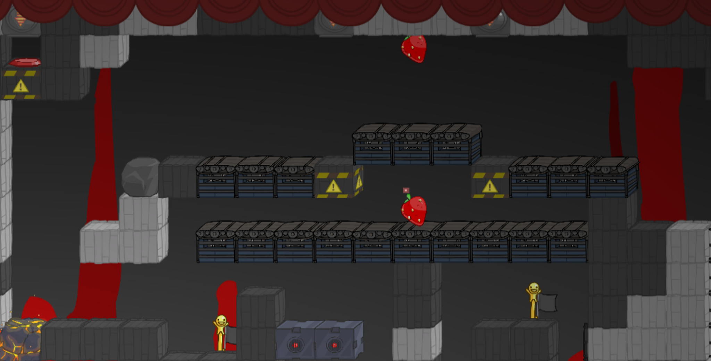
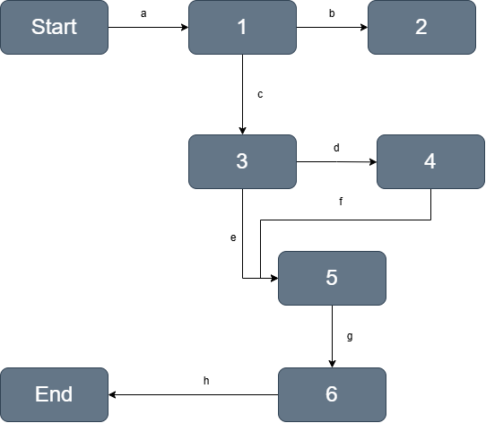

Battleblock Theater Level
I developed a 2D platformer level over 4 weeks during my third-year at the Rochester Institute of Technology I worked as the level designer, planning the layout, structure, and flow of the level utilizing BattleBlock Theater's Level Editor.
Level Description
This level is designed to introduce players to bridges and boulder blocks through puzzles and timing challenges. This is done through a three-act structure. First, players are introduced to the new blocks with a gap that can only be traversed with a bridge block. A boulder is nearby to signify it can be used to keep the bridge on. The second act introduces more difficult boulder/bridge puzzles, along with intermediate timing challenges to increase tension. This act climaxes with the most difficult challenge of the level, a timing challenge where a player must carry a boulder over several conveyor belts while avoiding lasers and falling. If the player dies or the boulder is dropped, it is carried back to the beginning of the challenge area. The final act involves a bridge blocking the path to the exit, with a grenade enemy being the one to keep the bridge active. This challenge demonstrates how bridges can be obstacles, and how enemies can be used to keep bridges active. After that, the exit can be calmly entered. Overall, this level is designed to introduce basic bridge mechanics, all while maintaining tension through timing challenges and intermediate puzzles.
Design Choices
For this level, I wanted the players to keep awareness of their surroundings at all times, utilizing the environment to solve puzzles. To achieve this, I designed several spatial puzzles and timing challenges using the boulder block, light block, and laser block.
Level Implementation
When designing the level, I created four distint segments:
- Boulder and Bridge Introduction
- Bubblegum Drop

- Conveyor Belt Run

- Enemy Blocking Path
Event List
- First Act - Introduce players to the bridge block and boulders
- Second Act- Expose player to intermediate timing challenges and puzzles
- Third Act - Enemy guards and blocks the path to the exit with a bridge
Gameplay Beats
- bridge puzzle to introduce bridges and boulders
- Beginner collectible timing challenge
- Bubblegum block and laser drop challenge
- Hidden Yarn
- Conveyor belt and rock parkour to bridge
- Path blocked by grenade enemy on bridge block
Traversal Sections
- Lead up to bridge puzzle
- Optional risky movement collectible challenge
- Climb up to bubblegum block and laser drop
- Hidden door to yarn
- Simple bomb block parkour leading up to conveyor belt timing challenge
- Path (d) merges into path (e)
- Simple climb to Grenade Enemy
- Drop to finish
Bubble Map
